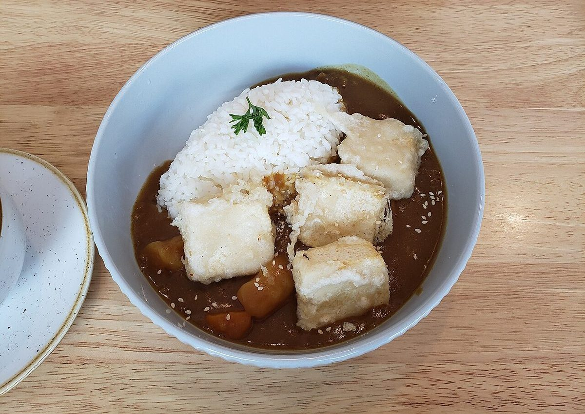
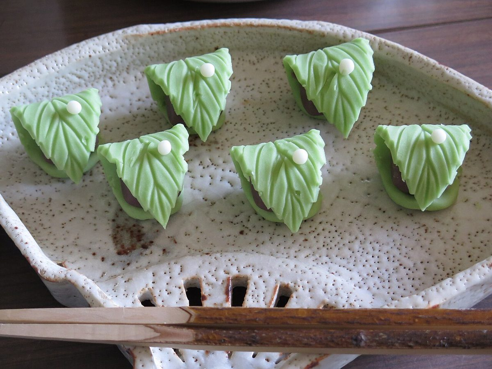
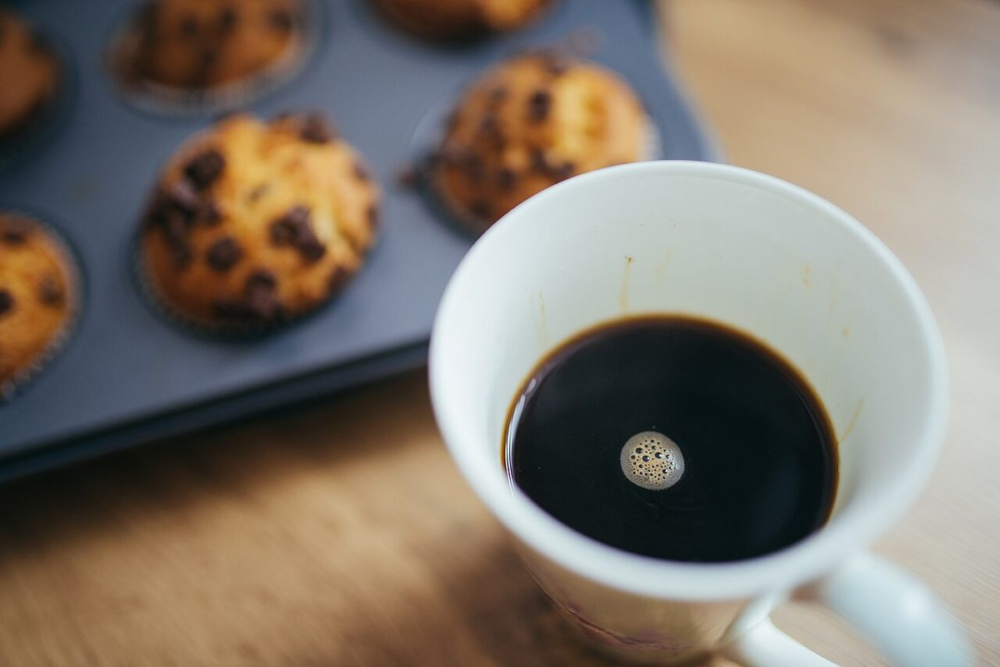
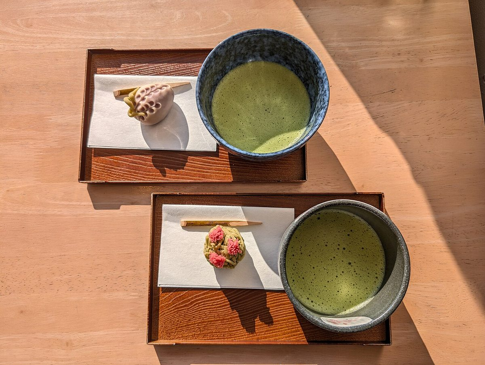
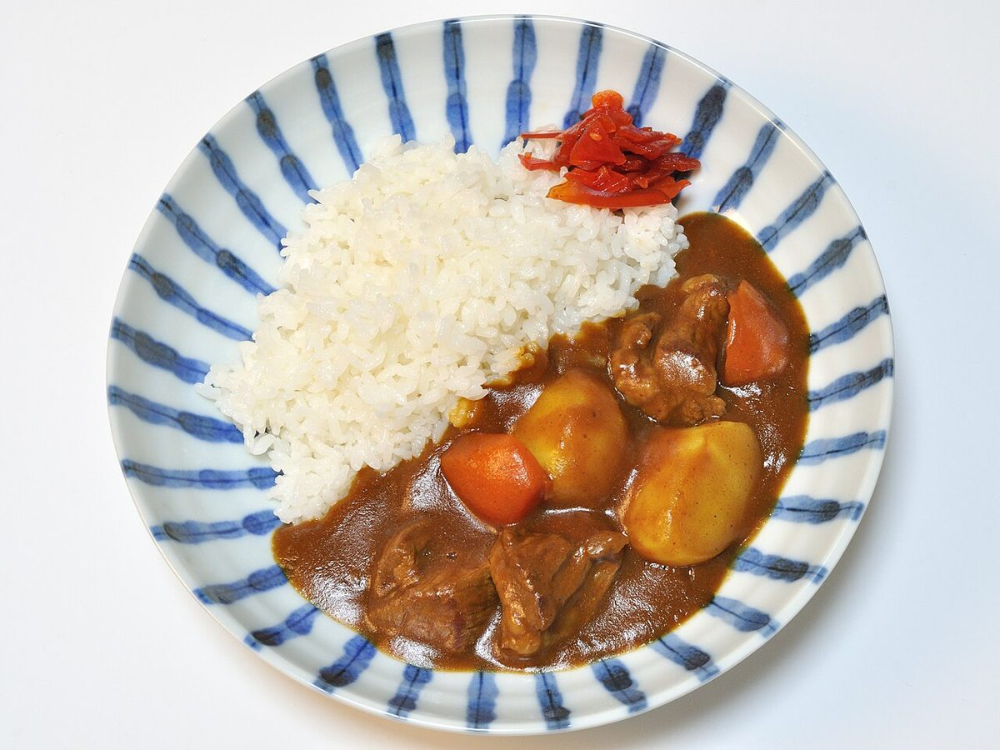

MENU
メニュー
お品書きは準備中です。内容や価格はお問い合わせください。
写真でイメージする
下の写真は、カフェのイメージとしてお借りしたフリー素材です。お店のメニューではありません。






お問い合わせの前に
- メニュー・価格・営業時間は、現在準備中です。
- お電話では、気になる点をそのままお尋ねください。
- お店からの正式な情報が届き次第、このページに反映します。
掲載している写真はフリー素材のイメージで、お店の実際の写真ではありません。日本国外で撮影されたものや、撮影地が不明のものを含みます。
MENU
お品書きは準備中です。内容や価格はお問い合わせください。
下の写真は、カフェのイメージとしてお借りしたフリー素材です。お店のメニューではありません。




